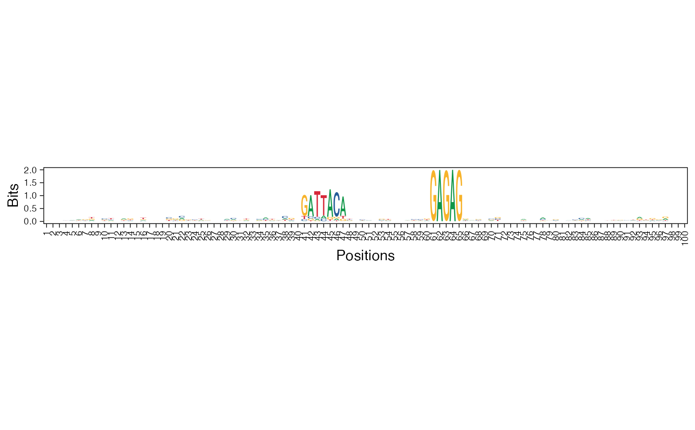

Visualize a given (PWM) matrix as a sequence logo.
plot_ggseqlogo(
pwm_mat,
method = "bits",
pos_lab = NULL,
pdf_name = NULL,
bits_yax = "full",
fixed_coord = FALSE
)Matrix (usually a PWM, but can be any non-normalized matrix) to be represented as a sequence logo. Rownames must be letters.
For ggseqlogo; either of 'custom', 'bits', or
'probability'. Default is 'bits'.
Labels for sequence positions, should be of same length as that of the sequences. Default value is NULL, when the positions are labeled from 1 to the length of the sequences.
Name of the file which will be saved as PDF.
Specify 'full' if the information content y-axis limits should be 0-2 or 'auto' for a suitable limit. The 'auto' setting adjusts the y-axis limits according to the maximum information content of the sequence logo. Default is 'full'.
Set this to TRUE to use a fixed aspect ratio for the plot. Default is FALSE.
A ggplot2 object so you can simply call print or saveon it later. If pdf_name is given, it is also saved in addition to
returning the ggplot object.
plot_ggheatmap for plotting PWMs as heatmaps,
plot_ggseqlogo_of_seqs for visualizing a collection of
sequences by their sequence logo.
Other visualization functions:
plot_ggheatmap(),
viz_bas_vec_heatmap_seqlogo(),
viz_seqs_acgt_mat()
res <- readRDS(system.file("extdata", "example_seqArchRresult.rds",
package = "seqArchR", mustWork = TRUE))
pwm <- seqArchR::make_dinuc_PWMs(get_clBasVec_m(res,iter=1)[,1],
add_pseudo_counts = FALSE)
plot_ggseqlogo(pwm_mat = pwm, fixed_coord = TRUE)
#> Warning: `guides(<scale> = FALSE)` is deprecated. Please use `guides(<scale> = "none")` instead.
#> Scale for 'x' is already present. Adding another scale for 'x', which will
#> replace the existing scale.
#> Coordinate system already present. Adding new coordinate system, which will replace the existing one.
